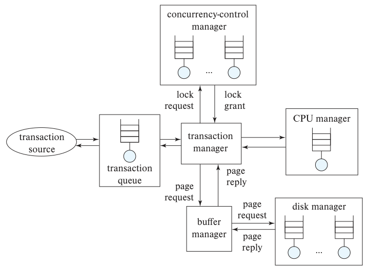

第 25 章 高级应用开发
应用开发涉及许多工作。第 6—9 章介绍了如何设计和构建应用，其中一个需要考虑的方面就是预期性能。应用完成后，运行速度达不到设计者的预期，或者每秒能处理的事务数低于要求，是很常见的情况。用户请求的操作如果迟迟无法完成，轻则引起不满，重则使应用根本无法使用。
通过性能调优，查找并消除瓶颈，适当增加内存、磁盘等硬件，可以明显加快应用运行。应用开发者能够从许多方面优化应用，数据库管理员也能采取措施，加快应用的数据处理。
基准测试是一组标准化任务，用于衡量数据库系统的性能。应用尚未开发完成时，就可以借助基准测试粗略估计所需的硬件与软件配置。
应用需要在开发过程中持续测试。测试要准备数据库状态和输入，再检查实际输出是否符合预期。本章将讨论应用测试中的问题。遗留系统是技术已经过时、通常采用上一代技术的应用系统，但它们往往仍承担组织的重要业务。我们将概述如何与遗留系统交互，以及如何迁移到更现代的系统。
标准对应用开发很重要，互联网时代更是如此，因为应用需要相互通信才能完成有用的工作。本章将概述影响数据库应用开发的各种标准。组织还常将用户信息保存在目录系统中，应用通过目录验证用户身份，获取用户类别等基本信息。
例如，用户类别可以是学生、教师等。我们将简要介绍目录系统的体系结构。
25.1 性能调优
性能调优通过调整参数和设计选择，改善系统对特定应用的支持。数据库系统设计的许多方面都会影响应用性能：从模式、事务设计等较高层次的问题，到缓冲区大小等数据库参数，再到磁盘数量等硬件配置，都可以调整。
25.1.1 为什么需要调优
应用有时表现不佳，查询耗时过长，妨碍用户完成工作。下面列举我们遇到的几个真实案例，说明问题原因以及解决方法。
第一个应用中，用户频繁遇到 Web 请求长时间等待或超时。监控显示，数据库 CPU 使用率很高，而磁盘和网络使用率很低。进一步检查正在执行的查询，发现一个针对大关系的简单查找采用了全表扫描，成本很高。在查找属性上添加索引后，查询时间大幅缩短，这个主要性能问题立即消失。
第二个应用中，某个查询性能很差。检查后发现，程序员将查询写得过于复杂，包含多个嵌套子查询；观察执行计划可知，优化器也选出了较差的方案。我们将嵌套子查询改写为连接，即消除查询的相关性，执行时间随之明显缩短。
第三个应用先查询大量行，再为每一行单独发起一次数据库查询。大量独立请求导致性能较差。正如下文所述，这些查询可以合并成一条，一次取回全部所需数据。这种改动使应用性能提高了一个数量级。
第四个应用在测试的轻负载下运行正常，交付真实用户后却在重负载下完全无法工作。原因是部分接口忘了关闭 JDBC 连接。数据库通常限制同时存在的 JDBC 连接数，一旦达到上限，应用无法再连接数据库，也就无法继续运行。
确保用完后关闭连接，就解决了这个问题。严格说，这属于缺陷修复；由于许多应用都有这种问题，我们仍将它列在这里。与之相关的一项调优手段是连接池：保留数据库连接供后续事务复用，避免反复建立和关闭连接的成本。
上述几个问题在测试中没有暴露，往往因为测试数据库比真实数据库小得多，或者并发用户数远低于线上负载。性能测试必须使用接近实际的数据规模和负载，让问题尽早出现在测试阶段。
25.1.2 定位瓶颈
多数系统，至少在调优之前，性能通常受限于一个或少数几个组件，它们称为瓶颈。例如，一个程序 80% 的时间花在代码深处的一个小循环上，其余代码只占 20%，这个循环就是瓶颈。加速非瓶颈部分对整体作用有限：即使把其余代码优化到几乎不耗时，总执行时间也最多减少 20%；而优化瓶颈循环，最好情况下可以将总时间减少近 80%。
调优时应先找到瓶颈，再改善相关组件的性能。移除一个瓶颈后，其他组件可能成为新的瓶颈。均衡的系统不会被某个单一组件限制；若系统有瓶颈，其他组件就未被充分利用，可能原本可以选用更便宜、性能较低的部件。
简单程序的总执行时间由各段代码的耗时决定，数据库系统则复杂得多：查询不仅消耗 CPU，还涉及磁盘 I/O 和网络通信。诊断的第一步，是使用操作系统监控工具检查 CPU、磁盘和网络链路的利用率。
还要监控数据库内部。多数数据库能指出哪些查询或查询模板消耗了最多 CPU、磁盘 I/O 或网络资源。查询模板是指结构相同、只是常量不同而重复执行的查询。除硬件资源限制外，锁竞争也可能导致性能不佳，事务会在锁队列中长时间等待。
多数数据库也提供监控锁竞争的机制。
说明 25.1 数据库性能监控工具
多数数据库提供可查询的视图关系，用于监控性能。例如，PostgreSQL 提供 pg_stat_statements 和 pgrowlocks，分别监控 SQL 资源使用和锁竞争；MySQL 支持 show processlist 命令，查看当前事务及其资源使用；Microsoft SQL Server 提供 sp_monitor、sp_who 和 sp_lock 存储过程。在线的 Oracle Database SQL Tuning Guide 介绍了 Oracle 中类似的视图。
译注：原书此处将两个名称写作
pgpgrowlocks和show processinfo，均已核对原页。上文分别修正为 PostgreSQL 的pgrowlocks和 MySQL 的SHOW PROCESSLIST。前者是查看行锁信息的扩展模块；后者显示正在运行的线程及其状态。参见 PostgreSQL 文档与 MySQL 文档。
监控工具帮助我们判断瓶颈位于 CPU、I/O 还是锁，并找出造成最多性能问题的查询。本章将介绍多种改善办法，包括补充索引或物化视图、改写查询与应用，以及增加硬件。
将数据库看作排队系统，有助于理解它的性能。事务会请求多种服务：进入服务器进程、执行中读取磁盘、获得 CPU 时间，以及获取并发控制所需的锁。每种服务都有相应队列，小事务可能将大部分时间花在排队上，特别是磁盘 I/O 队列。图 25.1 展示了一些队列。并发控制管理器为每个可加锁对象维护独立队列；磁盘管理器可能使用单个队列，也可能在数据库直接控制磁盘时为每个磁盘设置独立队列。当请求数超过数据库允许同时执行的查询数时，事务队列用于控制新查询何时进入执行。
由于存在许多队列，数据库瓶颈通常表现为某种服务队列很长，或该服务利用率很高。若请求严格等间隔到达，且每次服务时间不超过两次请求之间的间隔，那么请求到达时资源总是空闲，可以立即执行。但数据库请求的到达从来不会这样均匀，往往带有随机性。
如果磁盘等资源的利用率很低，请求到达时资源通常空闲，等待时间就是 0。假设请求均匀随机到达，队列长度及等待时间会随利用率上升而快速增长。
这种增长呈指数式。利用率接近 100% 时，队列会急剧变长，等待时间过长。应将利用率保持在能够使队列较短的水平。经验上，约 70% 通常较合适，超过 90% 则被认为过高，因为会造成明显延迟。排队系统的理论称为排队论，可参阅参考文献注释。

图 25.1 数据库系统中的队列。 transaction source 为事务来源，transaction queue 为事务队列，transaction manager 为事务管理器，concurrency-control manager 为并发控制管理器，CPU manager 为 CPU 管理器，buffer manager 为缓冲区管理器，disk manager 为磁盘管理器。lock request/grant 表示请求锁/授予锁，page request/reply 表示请求页/返回页。
25.1.3 调优的层次
调优通常围绕具体应用展开，可以在数据库层进行，也可以在数据库之外进行。
数据库上层的调优依赖应用本身，并非本书重点，这里只介绍几种方法。CPU 密集型应用可以先分析代码运行情况，找出消耗大量 CPU 的代码块，再改写它们。应用服务器往往有许多可调参数，用来提高性能或避免内存耗尽；也可以让多个应用服务器并行处理更高负载。
负载均衡器将请求分配给某个应用服务器；为保持会话连续，同一来源的请求始终路由到同一服务器。9.7.1 节介绍的连接池也广泛用于降低数据库连接创建成本。Web 界面还可以调整以提高响应性，例如用基于 JavaScript 和 Ajax 的界面替换旧式界面，见 9.5.1.3 节。
回到数据库本身，管理员与应用开发者可以从三个层次进行调优。
最高层由应用开发者控制，包括模式和查询。调整模式设计、创建的索引以及执行的事务，都可以改善性能。这一层的调优相对独立于具体数据库产品。
第二层是数据库参数，例如缓冲区大小、检查点间隔。可调参数取决于具体系统，多数产品手册会说明哪些参数可调以及如何选值。设计良好的数据库会尽可能自动调优，减轻用户与管理员的负担。例如，许多数据库的缓冲区大小固定但可配置；若系统能观察缺页率等指标并自动调整，管理员就不必手动设定。
最底层是硬件。可将硬盘换成使用闪存的 SSD；若磁盘 I/O 是瓶颈，可增加磁盘或使用 RAID；若磁盘缓冲区过小，可增加内存；若 CPU 是瓶颈，可使用更多处理器。
这三个层次相互影响，需要结合考虑。例如，高层调优可能使瓶颈从磁盘转移到 CPU，也可能反过来。通常先优化查询和物理模式；如果系统会自动调节数据库参数，这项工作也可并行进行。若性能仍不理想，再考虑逻辑模式与硬件。
25.1.4 物理模式调优
索引、物化视图等物理模式的调整对应用影响最小，因为无须修改应用代码。下面分别讨论。
25.1.4.1 索引调优
若查询是瓶颈，创建合适的索引往往能加速。若更新是瓶颈，则可能已经有太多索引，每次更新关系都必须维护它们；删除部分索引可能加快更新。
索引类型也很重要。有些系统支持散列索引、B⁺ 树以及 LSM 树等写优化索引（24.2 节）。范围查询较多时，B⁺ 树通常优于散列；写负载很高、读负载相对较低时，LSM 树可能优于 B⁺ 树。
索引是否采用聚集方式，也是可调选择。将关系按索引属性排序存储，就形成聚集索引；一个关系只能有一个这样的索引。通常应选择能够使最多查询和更新受益的索引作为聚集索引。
为帮助决定创建哪些索引、每个关系是否采用以及采用哪个聚集索引，多数商用数据库提供调优向导，详见 25.1.4.4 节。这些工具依据过去的查询与更新历史，即工作负载，估算不同索引对执行时间的影响，再给出建议。
25.1.4.2 使用物化视图
维护物化视图可以明显加快某些查询，特别是聚集查询。16.5 节的例子频繁查询各系教师工资总额。把每个系的工资总和预先保存在物化视图中，就能大幅减少查询开销。
物化视图也需谨慎使用：它占用空间，更重要的是需要维护时间。即时维护要求影响视图的更新与原事务一起完成，因此事务可能变慢。延迟维护则稍后更新视图，在此之前视图可能与基本关系不一致；例如在查询使用视图时更新，或定期更新。延迟维护能够减轻更新事务的负担。
管理员负责选择物化视图及其维护策略。可以分析负载中的查询类型，判断哪些查询必须加快、哪些更新或查询能够容忍变慢，据此选择视图。
例如，经常计算某个聚集结果或某个连接时，可以将它物化。
但即使查询类型数量中等，手动选择也很繁琐。要选得好，需要理解不同方案的成本；在不实际运行查询的情况下，通常只有优化器能较准确地估算。因此，手工方案往往依赖反复试验：物化一个或多个视图，运行工作负载并测量耗时，不断调整，直到性能可以接受。
更好的办法是在数据库内部提供物化视图选择功能，并与优化器集成，详见 25.1.4.4 节。
25.1.4.3 关系模式的水平分区
水平分区广泛用于并行与分布式存储和查询处理。在集中式系统中，也可以将一个关系的元组分成多个分区，以改善查询和更新。
例如，一个很大的关系包含日期属性，多数操作只涉及最近几个月的数据。若按日期分区，每个（年，月）组合对应一个分区，那么带有 date='2018-06-01' 等日期选择条件的查询，只需访问可能包含目标元组的分区，跳过其余分区。
更重要的是，每个分区可以独立建立索引。假设在 ID 属性上为每个分区分别建索引，那么同时指定 ID 和日期或日期范围的查询，只需查找相关分区的索引。分区小于整个关系，索引也较小，查找和插入都更快。即使总数据量不断增加，单个分区也能保持在一定大小以内，使这类查询的性能不会随时间下降。
代价是：没有分区属性选择条件的查询，必须逐个访问所有分区，可能明显变慢。若这类查询很少，分区的收益就可能超过成本，成为有价值的优化方式。
即使数据库内部不支持分区，也可以把关系 r 替换成多个物理关系 r₁、r₂、…、rₙ，并把原关系定义为视图 r = r₁ ∪ r₂ ∪ … ∪ rₙ。
如果优化器知道每个 rᵢ 的定义谓词，例如各自对应的日期范围，就能将 r 上带有分区属性选择条件的查询改写为仅访问相关 rᵢ 的查询。索引需要在各个 rᵢ 上分别建立。
25.1.4.4 物理设计的自动调优
多数商用数据库提供工具，帮助管理员选择索引和物化视图，以及完成其他物理设计任务，例如决定并行数据库中的数据分区方式。
工具分析查询与更新历史，建议建立哪些索引、物化哪些视图。管理员可以指定各类查询加速的重要程度，工具会据此选择。调优经常发生在应用尚未完全开发完成时，开发数据库可能很小，生产库预计却大得多，因此有些工具允许管理员指定预期规模和相关统计信息。
例如，Microsoft 的 Database Tuning Assistant 允许提出假设性问题：用户选择一个视图，优化器估算物化它后，整个工作负载的总成本，以及各类查询与更新的成本会如何变化。
自动选择通常通过枚举不同方案，再由优化器根据工作负载估算各方案的收益与成本。潜在设计方案和负载都可能很大，选择算法需要仔细设计。
第一步是获得工作负载，通常记录某段时间执行的所有查询与更新。然后进行工作负载压缩，用较少的代表性操作描述整个负载。例如，同一形式的更新用一个代表及其出现次数作为权重；同形式的查询也如此处理。接着可以忽略出现很少且成本不高的查询，优先考虑最昂贵的查询。对于大规模工作负载，这种压缩必不可少。
在优化器帮助下，工具生成一组可能有益的候选索引与物化视图，再尝试不同组合。穷举通常不现实：候选项本身已经很多，每个子集又都是一个可能的设计方案。
方案数量因此呈指数增长，需要启发式方法缩小搜索范围，减少考察的组合。
说明 25.2 调优工具
SQL Server 的 Database Engine Tuning Advisor、Oracle 的 SQL Tuning Advisor 等工具，可以建议添加索引或物化视图、调整关系分区方式，由管理员决定是否采纳并实施。
Microsoft Azure SQL 的 Auto Tuning 能自动创建和删除索引，以改善查询性能。但自动改变物理模式也可能使部分查询变慢。例如，优化器误估成本，认为使用新索引的计划更便宜，实际却更慢，影响用户。“force last good plan”功能会在新增索引等变更后监测查询性能；若变差，就强制恢复变更前的计划，前提是旧计划仍然有效。
Oracle 也支持自动调优，例如建议添加索引，或根据查询的实际使用方式，判断应为只取前几行还是取全部行进行优化。这两种用法的最佳计划可能很不一样。
一种选择索引与物化视图的贪心方法是：调用优化器的成本估算功能，计算各候选项的收益，然后选择总收益最大，或单位空间收益最大的候选项。计算收益时必须扣除维护成本。选定一个索引或视图后，其他候选项的收益可能改变，因此重新估算，再选下一个。重复这一过程，直到可用磁盘空间耗尽，或剩余候选项的维护成本已经超过其查询收益。
实际工具通常结合贪心选择与其他技术，以取得更好的结果，还会处理并行数据库中的分区决策、关系的物理存储方式等问题。
25.1.5 查询调优
改写查询，或改变应用向数据库发起查询的方式，往往能明显改善性能。
25.1.5.1 查询计划调优
早期许多数据库的优化器能力有限，查询写法会明显影响执行方式和性能。如今较先进的优化器能转换并高效执行不少写得不理想的查询，逐条手工调优的重要性有所降低。不过，优化器仍可能因以下原因选出较差计划。
判断是否需要调优之前，先查看实际使用的计划。多数数据库支持 explain 命令，显示执行计划、优化器使用或计算的统计信息，以及各部分的估计成本。某些变体还会实际运行查询，记录各部分的真实元组数和执行时间。
统计信息不准确是常见原因。例如，优化器误以为连接的两个关系很小，可能选择嵌套循环连接；实际关系很大时，效率就会很低。
理想情况下，每次更新关系都应同步更新统计信息，但这会给更新操作增加难以接受的开销。因此，数据库通常定期更新统计信息，或者由管理员显式执行命令。PostgreSQL、MySQL 等支持 analyze 命令1，重新计算统计信息。例如，在 PostgreSQL 中，analyze instructor 只重新统计 instructor，单独执行 analyze 则重新统计所有关系。向数据库加载数据，或对关系进行了大量插入、删除后，建议运行这一命令。
Oracle、Microsoft SQL Server 等系统会跟踪关系的插入与删除，当规模变化达到一定比例时自动更新统计信息，从而无须显式运行 analyze。
缺少必要索引也是查询变慢的原因。索引选择可以在物理模式调优时完成，但检查某个查询，有助于判断哪些索引能直接改善它。
当查询根据谓词从大关系中只取少量行时，索引格外重要。例如，查询某个系的学生，可能受益于 student 的 dept_name 索引。连接属性上的索引也很有用；若上述查询还将 student 与 takes 按 takes.ID 连接，那么 takes.ID 上的索引也可能有帮助。
数据库通常会在主键上自动创建索引，供选择和连接使用。大学模式中，takes 的主键索引以 ID 为第一列，因此也可能支持上述连接。
许多优化器不能很好地处理含嵌套子查询的复杂查询。16.4.4 节介绍了消除嵌套子查询相关性的方法。若未消除相关性，子查询可能被反复执行，产生大量随机 I/O；改写后则可以使用连接等高效集合操作，减少随机 I/O。多数优化器支持一定程度的相关性消除，但有的只能处理很简单的嵌套查询。按第 16 章的方法查看执行计划，如果优化器未能消除相关性，可以手工改写。
25.1.5.2 改用集合操作
应用程序常反复执行同一条 SQL，只改变参数值。每次调用除了服务端处理成本，还要付出与服务器通信的开销。
例如，程序逐个遍历各系，执行下面的嵌入式 SQL，求该系教师工资总额：
select sum(salary)
from instructor
where dept_name = ?
若 instructor 没有 dept_name 聚集索引，每次查询都会扫描关系；即使有索引，每个系也需要随机 I/O。可以改用一条 SQL，一次求出所有系的工资总额：
select dept_name, sum(salary)
from instructor
group by dept_name;
只需扫描一次 instructor，就能执行这个查询，避免逐系随机访问；结果也可以用一轮通信取回，再由客户端遍历各系的聚集值。
像这样合并多条 SQL，在许多情况下能明显降低执行成本，例如 instructor 很大且系的数量很多时。
JDBC API 还提供批量更新（batch update），允许通过一次数据库通信完成多次插入。图 25.2 的代码只在 executeBatch() 执行时通信一轮。第 5 章图 5.2 中的类似代码没有使用批量更新，需要插入多少位教师，就要通信多少轮。批量更新也让数据库能够一起处理多条记录，可能比逐条插入高效得多。
PreparedStatement pStmt = conn.prepareStatement(
"insert into instructor values(?,?,?,?)");
pStmt.setString(1, "88877");
pStmt.setString(2, "Perry");
pStmt.setString(3, "Finance");
pStmt.setInt(4, 125000);
pStmt.addBatch();
pStmt.setString(1, "88878");
pStmt.setString(2, "Thierry");
pStmt.setString(3, "Physics");
pStmt.setInt(4, 100000);
pStmt.addBatch();
pStmt.executeBatch();
图 25.2 JDBC 中的批量更新。
译注：原图两处用
setInt设置字符串类型的系名，已改为setString。setInt的第二个参数必须是整数，setString才接受字符串，见 JDBC 接口文档。
客户机—服务器系统还常用存储过程降低通信和 SQL 编译成本。查询以过程形式保存在服务端，并可预先编译；客户端只需调用过程，无须逐条传送一系列查询。
25.1.5.3 大批量加载与更新调优
向数据库装入大量数据称为大批量加载（bulk load）。如果把每条记录作为独立的 SQL insert 执行，性能通常很差。一方面，每条 SQL 都有解析成本；更重要的是，逐元组检查完整性约束、更新索引，会产生大量随机 I/O。若将插入合成大批量操作，就能以更充分的集合方式检查约束并维护索引。
这样能明显降低开销，性能提高一个数量级甚至更多并不少见。
多数数据库提供批量导入工具及对应的批量导出工具。导入工具从文件读取数据，高效检查完整性约束并维护索引。常见格式是每行一条记录、属性间用逗号或制表符分隔的文本文件，即 CSV 或 TSV；也支持数据库专用二进制格式、XML 等。各产品工具名不同：PostgreSQL 有 pg_dump、pg_restore，以及功能类似的 SQL copy 命令；Oracle 有 SQL*Loader，DB2 有 load，SQL Server 有 bcp 和 SQL bulk insert 命令。
再看批量更新。假设关系 funds_received(dept_name, amount) 保存各系收到的款项，例如电子转账。现在要将这些金额加到相应系的预算余额上。使用 SQL update 时，对 department 中的各元组，需要在 funds_received 中查找对应款项。可以在更新语句中使用子查询。为简化讨论，假定 funds_received 中每个系最多只有一个元组：
update department set budget = budget +
(select amount
from funds_received
where funds_received.dept_name = department.dept_name)
where exists (
select *
from funds_received
where funds_received.dept_name = department.dept_name);
update 的 where 条件保证只更新 funds_received 中有对应记录的系，set 中的子查询计算各系应增加的金额。
许多应用都有这种需求：有一张主表，更新数据按批次到来，需要相应地更新主表。SQL:2003 引入 merge 结构来简化这种信息合并。上面的更新可以写成：
merge into department as A
using (select * from funds_received) as F
on (A.dept_name = F.dept_name)
when matched then
update set budget = budget + F.amount;
using 子查询中的记录与 department 的记录匹配时，就执行 when matched 分支，更新匹配的 department 记录。
merge 还可以包含 when not matched then，用于插入新记录。本例中，某条 funds_received 记录没有对应的系时，可以用下面的分支新建 department 记录，并将 building 设为 null：
when not matched then
insert values (F.dept_name, null, F.amount)
译注：原书此处写作
F.budget，但前文定义的funds_received只有dept_name和amount两个属性。此处改用F.amount，与该关系定义及前面的更新分支一致。
虽然在这个例子里这样做意义不大2，但这一分支在其他场景很有用。例如，本地关系是主关系的副本，接收到的批次既有主关系的更新记录，也有新增记录；merge 可以更新匹配的旧记录，并插入无法匹配的新记录。
并非所有 SQL 实现都支持 merge，具体支持情况见各系统手册。
25.1.6 逻辑模式调优
调整逻辑模式有时也能改善查询性能。例如，在所选范式允许的范围内，可以对关系进行垂直分区。考虑 course 的模式：
course(course_id, title, dept_name, credits)
course_id 是键。在满足 BCNF 和第三范式的前提下，可分解为：
course_credit(course_id, credits) course_title_dept(course_id, title, dept_name)
因为 course_id 是键，两种表示逻辑等价，但性能特性不同。
如果多数访问只需要 course_id 和 credits，就可以只访问 course_credit，省去 title、dept_name，速度可能更快。缓冲区也能容纳更多 course_credit 元组。如果被省略的两个属性很大，收益尤其明显。在这种负载下，分成两个关系的模式更合适。
若多数访问同时需要 dept_name 与 credits，直接使用 course 更好，可以省去两个关系的连接。存储成本也更低，因为只存一个关系，course_id 不必重复。
13.6 节的列存储将垂直分区进一步推进，把每个属性单独存入一个文件。列存储无须重复主键，第 i 行可以通过各所需列的第 i 项重建。它在多种数据仓库应用中表现良好，因为能减少 I/O、改善缓存利用、提高压缩收益，并有效使用 CPU 向量处理能力。
另一种加速方式是保存反规范化关系，例如预先存储 instructor 与 department 的连接，每位教师都重复保存系名、楼宇和预算。更新时必须付出更多精力维护一致性，但查询教师姓名及所在楼宇时，无须再计算连接。如果这种查询很频繁，而且要求尽可能快，反规范化可能有益。
物化视图也能获得这些收益，代价是额外空间。它的主要优点是由数据库负责冗余数据的一致性，减轻程序员的负担。因此，只要系统支持，通常优先考虑物化视图。
还可以不物化连接，而将连接中会相互匹配的记录聚集在同一磁盘页上，加快连接计算。13.3.3 节介绍过这种聚集文件组织。
25.1.7 并发事务调优
不同类型的事务并发执行时，可能因锁竞争而性能下降。我们先讨论较常见的读写竞争，再讨论写写竞争。
例如，银行数据库白天持续执行许多小型更新事务，同时又运行一个统计各分行信息的大查询。如果大查询扫描某个关系时阻塞了该关系上的所有更新，会严重影响系统性能。
Oracle、PostgreSQL、Microsoft SQL Server 等支持快照隔离，查询读取数据快照，更新可同时进行，详见 18.8 节。大型查询可以利用快照隔离避免上述锁竞争。SQL Server 中，在事务开始处执行：
set transaction isolation level snapshot
即可让该事务使用快照隔离。Oracle 和 PostgreSQL 中，将命令里的 snapshot 换成 serializable 具有相应效果：这两个系统在 serializable 级别下使用快照隔离；其中 PostgreSQL 从 9.1 版起使用可串行化快照隔离。
如果系统不支持快照隔离，可以在更新很少或没有更新的时段运行大查询。但为网站服务的数据库可能根本没有这样的空闲时段。
也可使用较弱的一致性级别，例如 read committed，减少查询对并发更新的影响，但查询结果未必一致。是否允许近似或不一致的答案，取决于应用语义。
再看写写竞争。更新非常频繁的数据项会使许多事务等待其锁，称为更新热点。即使用快照隔离，也可能因写验证失败而频繁中止事务。常见场景是为新插入的数据分配唯一编号：事务读取并递增保存在数据库某个元组里的序列计数器。如果插入很频繁，而且计数器采用两阶段加锁，该元组就会成为热点。
改善并发的一种方法，是读出并递增计数器后立即释放锁。但这样做之后，即使事务中止，也不能回滚计数器。假设 T₁ 递增后，T₂ 在 T₁ 提交前也递增了计数器，随后 T₁ 中止；若将计数器恢复原值或简单减一，后续事务可能再次使用 T₂ 已使用的序号。
多数数据库提供专门的序列计数器：提前释放锁，不遵守两阶段加锁，并对撤销日志做特殊处理，使事务中止时不会撤销计数器更新。SQL 标准允许用以下命令创建序列：
create sequence counter1;
counter1 是序列名，可以创建多个不同名称的序列。取值语法并未统一：Oracle 使用 counter1.nextval 递增并返回下一值；PostgreSQL 的 nextval('counter1') 具有相同作用；DB2 使用 nextval for counter1。
如果目的只是为新元组分配唯一编号，SQL 标准还提供了显式序列之外的选择：在整型属性声明中加入 identity，通常同时把该属性设为主键。插入时若不指定它的值，数据库就自动生成一个新的唯一值。内部仍使用非两阶段加锁的序列，每插入一条记录就递增。DB2、SQL Server 等支持 identity，但语法有所不同。PostgreSQL 的 serial 类型具有类似效果，内部会自动创建采用这种加锁方式的序列。
由于事务中止后不能撤销取号，最终记录的序号可能有空缺。例如，使用 1002 的事务未提交，数据库中就可能有 1001、1003，却没有 1002。某些财务应用要求账单或收据编号连续，不能接受空缺，因此不应采用这些内置序列或自增属性。若将计数器放在普通元组中并使用两阶段加锁，中止时可以恢复计数器，下一事务重新取得同一序号，就能避免这种空缺。
长时间运行的更新事务还可能给日志带来压力，并延长崩溃恢复时间。事务更新很多数据时，可能尚未完成就写满日志，只能回滚；即使更新不多，只要运行时间很长，在日志设计不完善的系统中也可能阻碍旧日志删除。
这种阻碍同样可能使日志空间耗尽。
为避免这些问题，许多数据库严格限制单个事务的更新次数。即使没有硬性限制，也常值得把大型更新事务分成多个小事务。例如，给大公司所有员工加薪，可以让每个事务只处理一小段员工编号，称为小批量事务（minibatch transactions）。但要谨慎：若同时有人更新这些员工，多个小事务的结果可能不同于一个大事务；若发生故障，部分员工的加薪已提交，其他员工尚未处理。因此，恢复后必须继续执行这一批中剩余的事务。
长事务，无论只读还是更新，也可能填满锁表。若一个查询扫描大关系，优化器通常会使用关系锁，避免大量元组锁。但事务若执行许多小查询或更新，仍可能积累大量锁，最终耗尽锁表空间。
有些数据库通过自动锁升级处理：当事务获得大量元组锁时，将其升级为页锁，甚至整个关系的锁。按照 18.3 节的多粒度加锁规则，获得较粗粒度锁后，就无须继续记录细粒度锁，可以删除对应元组锁条目，释放锁表空间。若系统不支持自动升级，事务也可以显式获取关系锁，避免逐元组加锁。
25.1.8 硬件调优
硬件瓶颈可能出现在内存、I/O、CPU 或网络容量。本节着重讨论内存与 I/O。随着多核处理器和单机多处理器技术的发展，系统设计者可以选择合适的处理器型号和数量，以可接受的成本满足应用的计算需求。CPU 与网络互连方案的选择和调优，超出了数据库调优的讨论范围。
即使事务处理系统设计合理，只要事务所需的数据仍在磁盘上，每个事务通常也至少需要几次 I/O。因此，磁盘子系统必须能够承担所需的 I/O 速率。例如，考虑访问时间约 10 毫秒、平均传输速率为每秒 25～100 MB 的硬盘。
这样的硬盘每秒能完成略少于 100 次随机访问，每次读取 4 KB。若一个事务只需要两次 I/O，单块硬盘每秒最多支持约 50 个事务。
一种直接的改进是换用固态硬盘（SSD）：单块 SSD 每秒可支持数万次随机 I/O，但相同容量下价格高于机械硬盘。另一种方法是增加磁盘数量。若系统要求每秒执行 n 个事务，每个事务有两次 I/O，忽略数据倾斜，就至少需要将数据条带化或分区到 n/50 块机械硬盘上；若每块 SSD 支持每秒 10,000 次随机 I/O，则至少需要 n/5000 块 SSD。
这里限制性能的是随机访问速度；对机械硬盘而言，它受磁头移动速度限制。扩大磁盘容量本身无法解决问题。把更多数据放入内存，可以减少每个事务的磁盘 I/O。若全部数据都在内存中，除了写入便无须访问磁盘。让常用数据驻留内存，通常值得付出额外内存成本；让极少访问的数据长期占用内存，则可能造成浪费，因为内存比磁盘昂贵得多。
给定一笔可用于磁盘或内存的预算，怎样分配才能获得最高事务吞吐量？每减少每秒一次 I/O，节省的磁盘成本为：
单块磁盘价格 / 单块磁盘每秒访问次数。
如果某个页每 m 秒访问一次，把它缓存在内存中，节省的磁盘成本就是上述值的 1/m。把一页存入内存的成本为：
每 MB 内存价格 / 每 MB 内存容纳的页数。
两者的收支平衡点满足：
(1/m) × (单块磁盘价格 / 单块磁盘每秒访问次数) = 每 MB 内存价格 / 每 MB 内存容纳的页数。
整理等式，并代入相应参数，就能求得 m。如果某一页的访问频率高于每 m 秒一次，就值得购买足够的内存来保存它。
按 2018 年的硬盘技术与价格估算，假设 1 TB 硬盘约 50 美元、16 GB 内存约 80 美元，对随机访问的 4 KB 页，m 约为 4 小时。也就是说，硬盘上的一页只要至少每 4 小时访问一次，就值得购买内存来缓存它。页越大，这一时间越短：页大小改为 16 KB，m 就会由 4 小时降为 1 小时。
按 20 世纪八九十年代的磁盘和内存成本、速度计算，4 KB 页对应的临界值约为 5 分钟。这产生了广为使用的五分钟规则：访问频率高于每 5 分钟一次的数据，应缓存在内存中。
再按 2018 年的 SSD 技术与价格估算：假设一块 800 GB SSD 约 500 美元，每秒支持 67,000 次随机读取和 20,000 次随机写入。比较“把页留在内存”与“需要时从 SSD 读取”，4 KB 页的临界时间约为 7 分钟。因此，SSD 上某一页的访问频率高于每 7 分钟一次时，就值得购买内存来缓存。
顺序访问时，每秒可以读取更多页。假设每次读取 1 MB，机械硬盘的收支平衡时间约为 2.5 分钟：至少每 2.5 分钟使用一次的顺序访问数据，值得缓存在内存中。SSD 对应的时间短得多，约为 1.6 秒。因此，只有使用非常频繁时，缓存顺序访问的数据才有明显收益。
这些经验规则只考虑每秒 I/O 次数，没有计入响应时间。有些应用要求的响应时间小于或接近磁盘访问时间，即使某些数据很少使用，也需要将其保存在内存中。
SSD 比机械硬盘昂贵。若希望常用数据拥有较快的随机访问速度，同时降低冷数据的存储成本，可以采用闪存缓冲（flash-as-buffer）：把闪存作为持久缓冲区，每个块在机械硬盘上仍有固定位置，但只要经常使用，就保留在闪存中，暂不写回硬盘。闪存满时，淘汰较少使用的块；若该块自从硬盘读入后发生过更新，就将它写回。市场上已有同时提供机械硬盘与 SSD 缓冲区的磁盘子系统。决定购买多少 SSD 时，可采用这样的经验规则：4 KB 页若平均不到一天就访问一次，应放在 SSD 上；计算方法与前面的内存缓存比较类似。此时，数据库系统无法直接控制哪些数据位于哪一类存储介质。
若存储系统允许分别直接访问 SSD 和机械硬盘，管理员就能控制关系或索引的存储位置，把常用关系和索引放入闪存。多数数据库提供的表空间（tablespace）可以实现这种映射：在闪存上创建表空间，再把所需关系和索引分配进去。若希望在小于整个关系的粒度上控制位置，则需要修改数据库系统的代码。
硬件调优还需要决定采用 RAID 1 还是 RAID 5，这取决于数据更新的频率。RAID 5 的随机写入比 RAID 1 慢得多。
RAID 5 为完成一次随机写请求，需要两次读和两次写。假设应用为达到目标吞吐量，每秒需要 r 次随机读、w 次随机写，RAID 5 每秒便要执行 r + 4w 次 I/O，RAID 1 则为 r + 2w 次。将这些数值除以单盘每秒约 100 次 I/O，就能估算所需磁盘数量。许多应用的 r、w 足够大，仅 (r + w)/100 块磁盘就已能容纳全部数据的两份副本。对这样的应用，RAID 1 所需磁盘数量实际上少于 RAID 5！因此，RAID 5 适用于容量需求很大、更新速率较低，特别是随机更新较少的场景。
25.1.9 性能模拟
数据库系统尚未安装时，也可以通过性能模拟模型测试其表现。图 25.1 中的每项服务，如 CPU、各块磁盘、缓冲区和并发控制，都对应模拟模型中的一个组件。模型不必复现服务的全部细节，可以只刻画某些特征，例如服务时间，即开始处理请求后，完成该请求所需的时间。模拟磁盘访问时，便可以只使用平均访问时间。
请求通常需要排队，因此每项服务在模型中都有对应队列。事务由一系列请求构成，请求到达后进入队列，再按该服务的策略处理，例如先到先服务。CPU、磁盘等服务模型在概念上并行运行，以反映真实子系统的并行性。
事务处理模拟模型建立后，管理员可以开展多种实验。改变模拟事务的到达速率，可以观察不同负载下的行为；改变各服务的处理时间，可以分析性能对这些因素的敏感程度。系统参数也可以调整，从而先在模拟模型中进行性能调优。
25.2 性能基准测试
数据库服务器日益标准化，不同厂商产品之间的差异常体现在性能上。性能基准测试（performance benchmark）用一组任务，定量衡量软件系统的性能。
25.2.1 任务集合
数据库等软件系统很复杂，各厂商的实现差异较大，对不同任务的处理效率也各不相同。一个系统可能最擅长某类任务，另一个系统则在其他任务上更快。因此，单个任务通常不足以衡量整体性能，需要使用一组标准化任务，即性能基准测试。
汇总多个任务的性能数据时必须谨慎。假设有两类事务 T₁、T₂，用每秒完成的事务数衡量吞吐量。系统 A 对 T₁ 的吞吐量为 99，对 T₂ 为 1；系统 B 对两类事务的吞吐量均为 50。实际工作负载中，两类事务各占一半。
若直接对 99 和 1、50 和 50 分别取平均，似乎两个系统性能相同。但这种算法是错的：各执行 50 个事务，系统 A 约需 50.5 秒，系统 B 只需 2 秒！
只要存在多种事务，简单平均吞吐量就可能产生误导。应先计算完成整个工作负载所需的时间，再换算为每秒事务数。系统 A 平均每个事务耗时 50.5/100 = 0.505 秒，系统 B 则为 0.02 秒；对应平均吞吐量分别为 1.98 和 50。若各类事务等概率出现，应取吞吐量的调和平均数。n 个吞吐量 t₁、t₂、…、tₙ 的调和平均数为：
n / (1/t₁ + 1/t₂ + ⋯ + 1/tₙ)。
在本例中，系统 A 的调和平均数为 1.98，系统 B 为 50。对于两类事务各占一半的工作负载，系统 B 约比系统 A 快 25 倍。
25.2.2 数据库应用的类别
数据库系统处理的应用大致可分为两类：联机事务处理（OLTP），以及包括联机分析处理（OLAP）在内的决策支持。两者需求不同。要支持高频更新事务，需要较高的并发能力和加快提交处理的有效技术。
决策支持则依赖高效的查询执行算法和查询优化。有些数据库架构针对事务处理调优；另一些系统，如 Teradata 系列并行数据库，则面向决策支持；还有一些厂商努力兼顾两者。
实际应用通常同时包含事务处理和决策支持需求。哪种数据库最合适，取决于这两类需求所占的比例。
即使分别测得两类应用的吞吐量，在混合运行时也不能轻率地取调和平均数，因为事务之间可能互相干扰。例如，一个长时间运行的决策支持事务可能持有大量锁，让更新事务完全无法推进。只有事务互不干扰时，才适合使用吞吐量的调和平均数。
25.2.3 TPC 基准测试
事务处理性能委员会（Transaction Processing Performance Council，TPC）制定了一系列数据库性能基准测试标准。
TPC 对测试作了详细规定，包括关系集合、元组大小等。关系中的元组数并非固定，而是随宣称的每秒事务数成比例增加，反映较高事务速率通常对应较多账户这一事实。性能指标采用每秒事务数（TPS）。测量时还要求响应时间保持在指定范围内，避免通过无限延长响应时间换取高吞吐量。商业应用也看重成本，因此同时统计每 TPS 的价格。大型系统可能吞吐量很高，但每 TPS 的成本也很高。厂商公布 TPC 成绩之前，必须接受外部审计，确保系统遵守测试定义，包括完整支持事务的 ACID 性质。
这一系列最早的 TPC-A 于 1989 年制定，用一种事务模拟典型银行业务中的柜台存取款。事务会更新银行余额、柜员余额、客户余额等多个关系，并向审计轨迹关系增加记录。测试还包括与终端的通信，以真实反映端到端性能。TPC-B 则用于测试数据库及其操作系统的基础性能。
它去掉了 TPC-A 中涉及用户、通信和终端的部分，专注于后端数据库服务器。TPC-A 和 TPC-B 已不再使用。
TPC-C 模拟比 TPC-A 更复杂的系统，关注订单录入环境中的主要活动，包括录入与交付订单、记录付款、检查订单状态、监控库存。它仍被广泛用于 OLTP 系统的基准测试。
较新的 TPC-E 也面向 OLTP，模型是一家证券经纪公司：客户与公司交互并发起交易，公司再与金融市场交互，执行交易。
TPC-D 用于测试决策支持查询。决策支持系统越来越重要，而 TPC-A、TPC-B、TPC-C 衡量的是事务处理负载，不适合用来评价决策支持查询。TPC-D 中的 D 代表 decision support。其模式模拟销售与分销应用，包括零件、供应商、客户、订单及辅助信息。各关系大小按固定比例确定，数据库规模是所有关系的总大小，以 GB 为单位。规模因子为 1 表示 1 GB 数据库，为 10 表示 10 GB。工作负载包含 17 条 SQL 查询，模拟常见决策支持任务，其中一些使用聚集和嵌套查询等复杂 SQL 功能。
人们很快发现，利用物化视图和其他冗余信息，可以显著加快 TPC-D 中的查询。周期性报表等应用的查询事先已知，可以精心选择物化视图来提速，但测试也必须考虑维护这些视图的开销。
TPC-H 是对 TPC-D 的改进，H 表示即席查询（ad hoc）。模式相同，查询增加到 22 条，其中 16 条来自 TPC-D；另有两个更新操作，分别是一组插入和一组删除。TPC-H 禁止使用物化视图及其他冗余信息，只允许在主键和外键上创建索引。它模拟事先不知道查询内容的即席查询，因此无法预先构造合适的物化视图。另一种变体 TPC-R 中的 R 代表报表（reporting），允许物化视图及其他冗余信息，但这一基准已不再使用。
TPC-DS 是 TPC-H 的后续基准，模拟零售商品供应商的决策支持功能，包括客户、订单、商品，以及实体商店和在线销售等多种渠道。模式包含即席查询与报表两个部分，类似于 TPC-H 和 TPC-R，并同时规定查询负载和数据维护负载。
TPC-H 和 TPC-DS 的性能测量方式如下。单流能力测试（power test）将查询和更新逐个顺序执行，以 3600 秒除以查询执行时间（秒）的几何平均数，得到每小时查询数。吞吐量测试（throughput test）并行运行多个查询流，每个流执行全部 22 条查询，同时还运行一个更新流；再根据整个测试的总时间，计算每小时查询数。
综合指标取上述单流能力指标与吞吐量指标乘积的平方根，仍以每小时查询数表示。用系统价格除以该综合指标，就得到综合性价比指标。
TPC 还制定了其他基准，例如数据集成基准 TPC-DI、面向 Hadoop/Spark 大数据系统的 TPCx-HS，以及面向物联网数据后端处理的 TPCx-IoT。
25.3 应用开发中的其他问题
本节讨论应用开发的另外两个问题：应用测试与应用迁移。
25.3.1 应用测试
测试程序需要设计测试套件，即一组测试用例。程序不断演化，修改可能意外引入缺陷，称为程序回归（program regression），因此测试无法一劳永逸，每次修改后都要重新执行。让人手工完成每次测试通常不可行。可以在测试套件中，为每个用例保存预期输出。回归测试就是依次运行这些用例，检查实际输出是否符合预期。
对于数据库应用，一个测试用例包含两部分：数据库状态，以及传给应用某个接口的输入。
SQL 查询可能包含难以发现的细微错误。例如，本应执行外连接 r ⟕ s，却写成普通连接 r ⋈ s。只有当测试数据库中，r 存在找不到匹配 s 元组的元组时，两条查询的结果才会不同。因此，测试数据库应能识别常见错误。这类错误常是对查询或程序的小幅修改，称为变异（mutation）。若测试用例使正确查询与其变异版本产生不同输出，就称该用例杀死了该变异体（kill the mutant）。测试套件应尽可能覆盖并杀死常见变异体。
如果测试用例更新数据库，检查是否正确执行时，还必须确认数据库内容符合预期。
因此，预期输出既包括用户屏幕上的显示，也包括数据库状态及其变化。
数据库状态可能很大，多个测试用例常共用同一初始状态。如果一个用例更新了数据库，后续用例的结果就可能偏离预期，被误报为失败。为了避免这种干扰，每个会更新数据库的用例执行后，都应将数据库恢复到原来的状态。
测试也可以检验应用是否满足性能要求。此时，测试数据库应与实际数据库规模相当。有时可以直接使用已有数据；有时则需要生成指定规模的测试数据库。已有多种工具能够生成满足主键、外键等约束的数据，有些还会生成有实际含义的内容，例如用真实姓名样式填充 name，而非随机字符串。有些工具允许指定数据分布，例如大学数据库中的学生年龄主要分布在 18～25 岁，教师主要分布在 25～65 岁。
即使已有真实数据库，组织通常也不愿向承担性能测试的外部机构透露敏感数据。这时可以复制数据库，再对信用卡号、社会保障号、出生日期等内容进行混淆处理。常见方法是用随机生成的值替换真实值；若替换的是主键，还必须同步更新所有引用。若应用行为依赖该属性，例如根据出生日期执行不同操作，则可以只施加小幅随机变化，避免完全替换后破坏原有行为特征。
25.3.2 应用迁移
遗留系统（legacy systems）是技术已经过时、却仍在使用的旧一代应用系统。替换的成本和风险使它们得以延续。例如，组织过去自行开发了应用，如今可能希望改用商业产品；也可能因为旧技术已无法兼容现行标准和系统而考虑迁移。一些系统已运行数十年，使用网状或层次数据模型的数据库，或使用 Cobol 与文件系统，根本没有数据库。它们仍可能保存宝贵数据，支撑重要业务。
用新应用替换遗留应用，往往需要大量时间和资金。旧系统可能包含数百万行代码，由多个程序员团队经过数十年积累而成。
其中的大量数据必须迁入新应用，而新系统可能采用完全不同的模式。切换时还需要重新培训许多员工，通常又不能中断业务；旧系统新录入的数据，也必须能通过新系统访问。
许多组织会尽量保留遗留系统，让它与新系统互操作。要让关系数据库访问旧数据库，可以在旧系统上增加一层包装器（wrapper），使它对外表现得像关系数据库。包装器可提供 ODBC 或 OLE-DB 等互连标准接口，支持查询与更新，并负责将关系式查询和更新转换成旧系统能执行的操作。
决定替换遗留系统后，组织可以先开展逆向工程（reverse engineering）：阅读旧代码，提炼出所需数据模型的模式设计，例如 E-R 模型或面向对象模型；再分析其中的过程和业务流程，建立系统的高层模型。旧系统往往缺少模式与整体设计的高层文档，这一步便很必要。设计新系统时，开发者还会审视并改进原设计，再通过大量编码实现旧系统已有的用户界面、报表等功能。整个过程称为再工程（re-engineering）。
新系统建成并通过测试后，需要导入旧数据，并将后续业务切换过去。一次性完成切换的方式称为 big-bang 方式，风险较高：用户可能不熟悉新界面；测试也可能遗漏缺陷或性能问题。一旦销售、采购等业务交易受到严重影响，公司可能遭受巨大损失。极端情况下，切换失败后不得不放弃新系统，重新使用旧系统。
另一种 chicken-little 方式逐步替换旧系统的功能。例如，先用新界面配合旧后端，或先换后端而保留旧界面；也可以先迁移能够独立出来的部分功能。两种系统会共存一段时间，需要为旧系统开发和使用包装器，支持与新系统互操作，因此这种方式的开发成本更高。
25.4 标准化
标准规定软件系统的接口，例如程序语言的语法与语义、应用程序接口中的函数，或者面向对象数据库的数据模型。数据库系统日益复杂，常由独立开发的多个部分组成，彼此必须能够交互。例如，客户端与后端可能分别开发，但必须互相通信；拥有多种异构数据库的公司，也需要在数据库之间交换数据。标准在这些场景中发挥重要作用。
正式标准由标准组织或行业团体通过公开程序制定。占据市场优势的产品，有时未经正式认可就被广泛接受，成为事实标准。有些正式标准先于市场，例如 SQL-92 和 SQL:1999 的许多内容先规定功能，再由厂商实现，称为前瞻性标准（anticipatory standards）。另一些标准则将厂商已经实现、甚至已成为事实标准的功能加以规范，称为追认式标准（reactionary standards）。SQL-89 在许多方面属于后者，它规范的完整性检查等功能，已经出现在 IBM SAA SQL 标准和其他数据库中。
正式标准委员会通常由厂商、用户团体、标准组织和专业机构的代表组成，例如国际标准化组织（ISO）、美国国家标准学会（ANSI）以及电气电子工程师学会（IEEE）。委员会定期召开会议，成员提出新增或修改功能的提案。经过通常较长时间的讨论、修改与公开评审后，再投票决定接受或拒绝。标准实施一段时间后，局限和新需求逐渐显现，修订工作随之启动，通常数年后发布新版本。这一过程往往每隔几年重复，直到标准因技术过时或失去用户而不再有意义。
本节只从总体上介绍不同标准的目标。有关标准的详细资料，见本章在线提供的文献说明。
25.4.1 SQL 标准
SQL 是使用最广泛的查询语言，围绕它开展了大量标准化工作。ANSI、ISO 和各数据库厂商在其中发挥了主导作用。
SQL-86 是最初版本。IBM 于 1987 年发布 Systems Application Architecture（SAA）SQL 标准。随着新功能需求出现，正式 SQL 标准又更新为 SQL-89 和 SQL-92。
SQL:1999 增加了多种功能，前面的章节已经介绍过其中许多内容。
后续版本包括：
- SQL:2003：对 SQL:1999 作小幅扩展。部分功能，例如 11.3.3 节介绍的 OLAP 功能，先以 SQL:1999 修订条款的形式发布，没有等到 SQL:2003。
- SQL:2006：增加若干 XML 相关功能。
- SQL:2008：对 SQL 作小幅扩展，例如扩展 merge 子句。
- SQL:2011：增加多种时态功能，可以为元组关联时间段，也可用已有列作为起止时间，并定义基于时间段的主键。带时间段的删除和更新，可能修改已有元组的时间段，同时删除或插入元组。标准还引入 overlaps、contains 等时间段运算符。此外，它继续扩展 merge、先前已有的窗口构造，以及通过 fetch 子句限制查询返回结果数的功能。
- SQL:2016：增加 JSON 支持，以及 listagg 聚集操作；后者将一组元组中的属性值拼接为字符串。
多数新功能仅由少数数据库系统支持；反过来，多数数据库系统也提供一些标准之外的功能。
25.4.2 数据库连接标准
ODBC 广泛用于客户端应用与数据库之间的通信，为多种语言定义了 API。Java 应用与数据库通信使用的 JDBC 以 ODBC 为基础设计，提供类似功能。
ODBC 基于 X/Open 行业联盟和 SQL Access Group 制定的 SQL 调用级接口（Call Level Interface，CLI）标准，并作了若干扩展。
ODBC API 定义调用级接口、SQL 语法，以及接口调用顺序的规则，并规定 CLI 与 SQL 语法的一致性级别。例如，CLI 的核心级别包括连接数据库、准备和执行 SQL、获取结果或状态、管理事务。级别 1 在此基础上增加目录信息检索等功能；级别 2 进一步要求发送与获取参数数组、检索更详细的目录信息等能力。
ODBC 允许客户端同时连接多个数据源并在其间切换，但各数据源上的事务相互独立，ODBC 本身不支持两阶段提交。
分布式系统比客户机—服务器系统更一般。X/Open 还制定了数据库互操作的 XA 标准，规定兼容数据库应提供的事务管理原语，例如开始、提交、中止和准备提交。事务管理器调用这些原语，通过两阶段提交实现分布式事务。XA 独立于数据模型，也独立于客户端与数据库交换数据的具体接口。因此，一个事务可以同时访问关系数据库和面向对象数据库，由事务管理器通过两阶段提交保证全局一致性。
有些数据源并非关系数据库，甚至完全不属于数据库，例如普通文件和电子邮件存储。Microsoft 的 OLE-DB 是一个 C++ API，目标与 ODBC 相近，但面向可能只支持有限查询和更新的数据源。它同样提供连接数据源、开始会话、执行命令的接口，并以行集（rowset）形式返回结果。
Microsoft 的 ActiveX Data Objects（ADO）和 ADO.NET API，既能访问关系数据库，也能访问 OLE-DB 等其他类型的数据源。
25.4.3 对象数据库标准
面向对象数据库（OODB）的标准化主要由厂商推动。对象数据库管理组（Object Database Management Group，ODMG）由 OODB 厂商组成，致力于统一数据模型与语言接口，现已停止活动。JDO 则是为 Java 提供持久化能力的标准。
此外，人们还尝试为对象数据库和服务等相关对象技术制定标准，但大多未能广泛采用，如今已很少使用。
对象关系映射（ORM）技术则相当流行：后端用关系数据库存储数据，程序员通过面向对象的 API 访问和操作数据。
支持这类映射的系统包括面向 Java 的 Hibernate，以及流行的 Python Web 框架 Django 的数据层。不过，这一领域尚无广泛接受的正式标准。
25.5 分布式目录系统
假设一个组织希望向内部不同人员提供员工信息，包括姓名、职位、员工编号、地址、电子邮件、电话号码、传真号码等。这类信息常通过目录（directory）共享，供用户浏览和搜索。
一般而言，目录记录某一类对象的信息，例如人员信息。它既可以查询某个具体对象，也可以反过来查找符合条件的对象。
目录的一项主要用途是用户认证。应用收集密码等认证信息，再借助目录验证身份。用户类别，例如学生或教师，以及已获授权，也可通过目录共享。组织内的多个应用便能共用一套目录服务完成认证，并依据用户类别和权限，只提供该用户有权查看的数据。
目录也能保存其他信息，作用类似文件系统目录。例如，浏览器可将个人书签和设置存入目录系统，让用户在家中、办公室等不同地点访问同一套设置，无须共享文件系统。
25.5.1 目录访问协议
许多组织，尤其是电话公司，通过 Web 界面提供目录信息。这样的界面方便人使用，但程序也需要访问目录。
为规范程序对目录的访问，人们制定了多种协议，其中使用最广泛的是轻量级目录访问协议（Lightweight Directory Access Protocol，LDAP）。
上述信息都可以存入普通数据库，再通过 JDBC、ODBC 等接口访问。那么，为什么还需要专门的目录访问协议？至少有两个原因。
首先，目录访问协议面向有限的数据访问方式，设计较为简化；它们与数据库访问协议并行发展。
其次，目录系统提供类似文件路径的层次命名机制，适合说明分布式目录的各服务器分别保存哪些信息。例如，一台服务器保存贝尔实验室 Murray Hill 员工的信息，另一台保存 Bangalore 员工的信息，两地各自管理本地数据，再通过目录协议跨网络访问。系统还可以自动把一处收到的查询转发到另一处，无须用户介入。
基于这些原因，许多组织通过目录访问协议在线提供组织信息。用户可以查询他人的地址、电话、电子邮件，查找其所属部门，也可以了解部门的层次关系。
许多目录系统选择用关系数据库保存数据，从而复用已有存储能力。
25.5.2 LDAP：轻量级目录访问协议
目录系统通常由一台或多台服务器组成，为多个客户端提供服务。客户端通过目录系统定义的 API 与服务器通信。目录协议还定义数据模型和访问控制。ISO 制定的 X.500 是一种目录访问标准，但协议较复杂，使用不广。LDAP 提供 X.500 的许多功能，同时降低复杂性，因而得到广泛采用。除了多种开源实现，基于 LDAP 的 Microsoft Active Directory 也被许多组织使用。
下面概述 LDAP 的数据模型和访问协议。
25.5.2.1 LDAP 数据模型
LDAP 目录保存类似对象的条目（entry）。每个条目必须有唯一标识自己的可分辨名称（distinguished name，DN）。DN 又由一系列相对可分辨名称（relative distinguished name，RDN）组成，例如：
cn=Silberschatz, ou=Computer Science, o=Yale University, c=USA
这个 DN 组合了姓名与组织地址：先写姓名，然后是组织单元 ou、组织 o，最后是国家 c。各部分沿用原例中英文邮寄地址由具体到一般的顺序，与通常文件路径由上层到下层的写法相反。
一个 DN 包含哪些 RDN，由目录系统的模式规定。
条目还可以具有属性。LDAP 提供二进制、字符串和时间类型，以及电话号码类型 tel、地址类型 PostalAddress；地址各行用 $ 分隔。与关系模型不同，LDAP 属性默认允许多值，因此一个条目可以保存多个电话号码或地址。
LDAP 允许定义对象类，指定属性名和类型，也支持通过继承定义对象类。一个条目可以属于一个或多个对象类，无须存在唯一的、最具体的所属对象类。
条目按 DN 组织为目录信息树（directory information tree，DIT）。叶节点通常表示具体对象，内部节点则表示组织单元、组织、国家等。子节点的 DN 包含父节点的全部 RDN，并增加一个或多个 RDN。例如，内部节点的 DN 为 c=USA，其下所有条目的 c 值都是 USA。
条目无须保存完整 DN。系统可以从条目沿 DIT 向上遍历，收集各个 RDN=value 部分，生成完整名称。
一个条目有时需要多个 DN，例如某个人同时属于多个组织。DIT 的叶节点可以是指向另一分支中条目的别名，以处理这种情况。
25.5.2.2 数据操作
LDAP 没有像 SQL 那样定义数据定义语言和数据操纵语言，而是规定执行这些操作的网络协议。用户通过 API 或厂商工具定义、操作数据。LDAP 还规定了 LDAP 数据交换格式（LDIF），用于保存和交换信息。
LDAP 的查询机制较简单，只支持选择和投影，不支持连接。查询需要指定：
- 基点：用 DN 指定 DIT 中的一个节点，即从根到该节点的路径。
- 搜索条件：单个属性条件的布尔组合，支持相等、通配符匹配和近似相等；近似相等的具体含义由系统决定。
- 范围：只搜索基点、基点及其子节点，或基点以下的整棵子树。
- 返回的属性。
- 结果数量与资源消耗的上限。
查询还可以指定是否自动解引用别名。关闭这一选项时，别名条目本身也可以作为结果返回。
LDAP 查询的其他细节不再展开。各实现通常提供查询和更新 LDAP 数据的 API，也可能提供查询目录数据的 Web 服务。
25.5.2.3 分布式目录树
组织的信息可以分散在多棵 DIT 中，每棵树保存一部分条目。DIT 的后缀是一系列 RDN=value 对，表示这棵树所保存的信息范围；从条目向根遍历得到的名称，再接上这些后缀，就形成完整 DN。例如，一棵树的后缀为 o=Nokia, c=USA，另一棵为 o=Nokia, c=India。它们可以分属不同组织单元或地理位置。
DIT 节点可以保存指向另一棵 DIT 节点的转介（referral）。例如，o=Nokia, c=USA 下的 Bell Labs 组织单元有自己的 DIT，那么上层目录中就可以设置一个 ou=Bell Labs 节点，指向 Bell Labs 的目录树。
转介把分布式目录集合整合为一个系统。服务器收到查询后，可以将转介返回客户端，由客户端继续查询被指向的 DIT；这一过程对用户透明。服务器也可以自行访问目标 DIT，将远程结果与本地结果一起返回。
LDAP 的层次命名允许组织的不同部分分别管理自己的信息，转介机制则把这些目录整合成一个虚拟目录。
LDAP 并不要求特定的划分方式，但组织通常按地域或组织结构划分信息。例如，在员工较多的每个地点各维护一个目录，或由各部门分别管理目录。许多 LDAP 实现还支持 DIT 的主从复制和多主复制。
25.6 小结
- 要获得良好性能，需要调整数据库系统参数，也要优化模式、索引、事务等较高层次的设计。调优应从识别并消除瓶颈入手。
- 数据库可以在模式与查询、系统参数、硬件三个层次调优。数据库通常提供缓冲区大小等多种可调参数。
- 合理选择索引和物化视图，配合水平分区，可以明显改善性能。基于工作负载历史的自动调优工具，有助于选择总体成本较低的方案。对于 OLAP，垂直分区和列式存储也可能带来显著收益。
- 事务可以通过调优减少锁竞争。快照隔离，以及支持提前释放锁的序列编号机制，分别有助于减少读写竞争和写写竞争。
- 硬件调优包括内存容量、SSD 与机械硬盘的选择，以及日益重要的 CPU 核数。
- 随着数据库越来越符合共同标准，性能基准测试在产品比较中的作用更加突出。TPC 系列广泛用于比较不同工作负载下的数据库性能。
- 应用开发过程中与部署之前都需要充分测试，既要发现错误，也要检验是否达到性能目标。
- 遗留系统采用较早的技术，例如非关系数据库，或直接使用文件系统。若它们支撑重要业务，就常需要与新系统互操作。迁移必须谨慎，避免代价高昂的业务中断。
- 数据库系统复杂且需要互操作，因此标准十分重要。SQL 已有正式标准；ODBC、JDBC 等事实标准以及行业团体标准，也推动了客户机—服务器数据库的发展。
- 分布式目录系统广泛用于各类应用，可以看作分布式数据库。LDAP 常用于组织内部的身份认证和员工信息管理。
复习术语
性能调优；瓶颈；排队系统；物理模式调优。
索引调优；物化视图；即时视图维护；延迟视图维护；物理设计调优；工作负载；查询调优；集合操作；JDBC 批量更新；大批量加载；大批量更新；merge 语句；逻辑模式调优；可调参数；并发事务调优；序列；小批量事务；硬件调优；五分钟规则；性能模拟；性能基准测试；服务时间；吞吐量；数据库应用类别；OLTP；决策支持。
TPC 基准测试：TPC-C、TPC-D、TPC-E、TPC-H、TPC-DS；回归测试；杀死变异体；应用迁移；遗留系统；逆向工程；再工程；标准化。
正式标准；事实标准；前瞻性标准；追认式标准；数据库连接标准；X/Open XA 标准；对象数据库标准；基于 XML 的标准；LDAP；目录信息树；分布式目录树。
练习题
25.1 调查自己熟悉的数据库系统能够提供哪些性能信息。至少包括：当前执行或近期执行的查询；各查询消耗的 CPU 和 I/O 资源；页请求中缓冲区未命中的比例，如果系统支持，也应按查询获取；竞争较激烈的锁。此外，使用操作系统工具获取 CPU、I/O、网络利用率，以及已打开的网络连接数量。
25.2 许多应用需要为每个事务生成序列号。
- a. 如果对序列计数器采用两阶段加锁，它可能成为并发瓶颈。解释原因。
- b. 许多数据库提供内置序列计数器，不按两阶段方式加锁。事务请求序列号时，系统锁住计数器，递增后立即解锁。
- i. 解释这种方式如何提高并发性。
- ii. 解释为什么最终已提交事务的序列号中可能存在空缺。
25.3 给定关系 r(a, b, c)。
- a. 举例说明，什么情况下 r 的聚集方式会显著影响属性 a 上等值选择查询的性能。
- b. 如果还需要在属性 b 上执行范围选择，能否找到一种聚集方式，使 r.a 上的等值选择和 r.b 上的范围选择都能高效执行？解释原因。
- c. 如果无法同时满足上述聚集要求，说明怎样选择索引，使两类查询都能高效执行。
25.4 短时间内向关系插入大量记录时，常建议先删除所有索引，插入结束后再重建。
- a. 为什么这样做？
- b. 通过批量更新索引，可以避免删除与重建。说明 B⁺ 树索引如何高效实现这一过程。
- c. 如果使用 LSM 树等写优化索引，上述建议还有意义吗？
25.5 某数据库应用似乎没有单一瓶颈：CPU 与磁盘利用率均较高，各数据库队列大致平衡。这是否意味着已经无法继续调优？解释原因。
25.6 某系统执行三类事务：A 类每秒 50 个，B 类每秒 100 个，C 类每秒 200 个。工作负载中，A、B 各占 25%，C 占 50%。
- a. 假设事务之间互不干扰，系统平均吞吐量是多少？
- b. 哪些因素可能使不同类型的事务互相干扰，导致上述计算不准确？
25.7 对关系 r(A, B)、s(B, C)，程序员本应编写：
select *
from r natural left outer join s;
却写成：
select *
from r natural join s;
- a. 给出一组 r、s 的示例数据，使两条查询结果相同。
- b. 再给出一组数据，使结果不同，从而暴露查询中的错误。
25.8 比较前瞻性标准与追认式标准，列出前者的一些优点和缺点。
25.9 说明怎样利用 LDAP，在不复制底层数据的情况下，提供多种层次化的数据视图。
习题
25.10 数据库调优：
- a. 可以在哪三个主要层次提高数据库性能？
- b. 每个层次分别举出两种调优方法。
25.11 调优时，应先通过增加磁盘或内存调整硬件，还是先通过增加索引或物化视图优化事务？解释原因。
25.12 某应用的每个事务都访问并更新一个元组，该元组位于采用 B⁺ 树文件组织的一个很大关系中。假设 B⁺ 树的全部内部节点都在内存中，但只有少量叶页能放入内存。说明如何计算支持每秒 1000 个事务所需的最少磁盘数。
再使用 12.3 节给出的磁盘参数，计算具体数量。
25.13 将一个长事务分成多个小事务，目的是什么？可能引入哪些问题？怎样避免？
25.14 假设内存价格减半，磁盘访问速度，即每秒访问次数，翻倍，其他条件不变。五分钟规则与一分钟规则会受到什么影响？
25.15 至少列出 TPC 基准测试的四项特点，说明它们如何使性能测量更贴近实际、更可信。
25.16 为什么 TPC-D 被 TPC-H 与 TPC-R 取代？
25.17 哪些应用特征有助于判断 TPC-C、TPC-H、TPC-R 中哪一种最适合模拟该应用？
25.18 既然 LDAP 功能可以在数据库系统之上实现，为什么仍需要 LDAP 标准？
延伸阅读
[Harchol-Balte (2013)] 从计算机科学角度系统介绍排队论。
IBM DB2、Oracle、Microsoft SQL Server 的在线手册及相关书籍介绍了各自的调优支持。[Shasha and Bonnet (2002)] 详细讨论数据库调优原理；[O’Neil and O’Neil (2000)] 对性能测量和调优提供了系统的教材式介绍。五分钟与一分钟规则可参阅 [Gray and Graefe (1997)]、[Graefe (2008)] 和 [Appuswamy et al. (2017)]。
[Bitton et al. (1983)] 较早提出了数据库系统基准测试，即 Wisconsin 基准。[Gray (1991)] 介绍 TPC-A、TPC-B 和 TPC-C。各项 TPC 基准的在线说明、测试结果及新提案信息见 TPC 网站。
XData 系统 提供生成测试数据、发现 SQL 查询错误，以及评阅学生 SQL 查询的工具。
ISO/IEC 网站 提供多种标准文档，包括部分 SQL 标准。ODBC、OLE-DB、ADO、ADO.NET 的资料可查阅 Microsoft 网站。
入口为 www.microsoft.com/data。基于 XML 的标准与工具资料见 W3C。
参考文献
[Appuswamy et al. (2017)] R. Appuswamy, R. Borovica, G. Graefe, and A. Ailamaki, “The Five minute Rule Thirty Years Later and its Impact on the Storage Hierarchy”, In Proceedings of the 7th International Workshop on Accelerating Analytics and Data Management Systems Using Modern Processor and Storage Architectures (2017).
[Bitton et al. (1983)] D. Bitton, D. J. DeWitt, and C. Turbyfill, “Benchmarking Database Systems: A Systematic Approach”, In Proc. of the International Conf. on Very Large Databases (1983), pages 8–19.
[Graefe (2008)] G. Graefe, “The Five-Minute Rule 20 Years Later: and How Flash Memory Changes the Rules”, ACM Queue, Volume 6, Number 4 (2008), pages 40–52.
[Gray (1991)] J. Gray, The Benchmark Handbook for Database and Transaction Processing Systems, 2nd edition, Morgan Kaufmann (1991).
[Gray and Graefe (1997)] J. Gray and G. Graefe, “The Five-Minute Rule Ten Years Later, and Other Computer Storage Rules of Thumb”, SIGMOD Record, Volume 26, Number 4 (1997), pages 63–68.
[Harchol-Balte (2013)] M. Harchol-Balte, Performance Modeling and Design of Computer Systems: Queueing Theory in Action, Cambridge University Press (2013).
[O’Neil and O’Neil (2000)] P. O’Neil and E. O’Neil, Database: Principles, Programming, Performance, 2nd edition, Morgan Kaufmann (2000).
[Shasha and Bonnet (2002)] D. Shasha and P. Bonnet, Database Tuning: Principles, Experiments, and Troubleshooting Techniques, Morgan Kaufmann (2002).
图片版权
本章开篇帆船照片：© Pavel Nesvadba/Shutterstock。